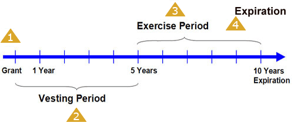

Look at the following graphic and click on each key event in the life of an ISO to learn more about the implications involving an ISO at each stage.
Click on each to learn more about the implications involving an ISO at each stage.

1 - Grant
ISOs have no tax impact upon the grant to the employee. It is important to note that under the IRS Code, these options can only be granted to employees.
2 - Vesting
The illustration shows a 5-year vesting schedule. Vesting alternatives, such as the one used in this example, are at the discretion of the employer. Options can vest 100% when granted or may vest over time, with a certain percentage of the grant vesting each year. When vesting over time, as in this example, a portion of the shares may vest immediately or a period of years may occur before the first shares vest. Upon vesting, the employee has the power to exercise the option and purchase the stock at the option price. There is no income tax consequence for vesting in this type of option.
3 - Exercise
The option can generally be exercised any time after vesting. All ISOs must be fully exercised within 10 years of the grant date or three months after the employment has been terminated (one year after if disabled or deceased); otherwise, the option will be lost, or in some cases, convert to NQSOs. When exercised, the shares are purchased at the option price. The employee owns the shares outright at that time, with a basis equal to the option price paid for the securities.
For purposes of regular income taxation, there is no tax consequence when exercising the incentive stock option, as long as the stock is not sold at the time of exercise. However, the excess of the fair market value of the stock over the amount paid for the stock is a tax preference item to be used in calculating the alternative minimum tax (AMT). We will discuss the AMT in more detail in the following pages.
4 - Expiration
Once an ISO has been exercised, the employee owns the stock outright. For income tax purposes, there are two possible results that can occur at the sale of the stock.
According to IRC Section 422, if the ISO stock is sold in less than one year plus one day from exercise OR within two years of the grant date, this is considered a "disqualifying disposition" and the key tax advantages of an ISO are lost. If sold beyond these dates, then the tax advantages of the ISO are retained. We will discuss both of these possible scenarios on the following pages.
to learn more about the implications involving an ISO at each stage.